리눅스마스터-1급 (2019-03-16 기출문제)
1과목: 리눅스 실무의 이해
1. 다음 중 배포된 리눅스의 순서가 초기부터 최근 순으로 알맞게 나열된 것은?
- SLS - SUSE - Slackware
- SLS - Slackware - SUSE
- Ubuntu - Debian - SLS
- Debian - Ubuntu – SLS
(정답률: 65%)

2. 다음 설명에 해당하는 리눅스 배포판으로 알맞은 것은?
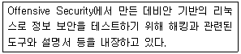
- Knoppix
- BackTrack
- Kali Linux
- Linux Mint
(정답률: 72%)
3. 다음 설명에 해당하는 라이선스로 알맞은 것은?
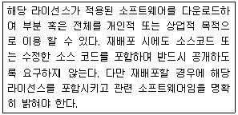
- GPL
- MPL
- BSD
- Apache
(정답률: 50%)
4. 다음 설명과 관련된 기술로 가장 알맞은 것은?
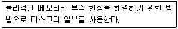
- 스와핑(Swapping)
- 파이프(Pipe)
- 라이브러리(Library)
- 가상 콘솔(Virtual Console)
(정답률: 81%)
5. 다음 설명으로 알맞은 것은?
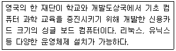
- Arduino
- Micro Bit
- Raspberry pi
- Scratch
(정답률: 73%)
6. 다음은 LVM에 관한 설명이다. ( 괄호 ) 안에 들어갈 내용으로 알맞은 것은?
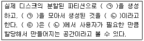
- ㉠-볼륨그룹 ㉡-물리적 볼륨 ㉢-논리적 볼륨
- ㉠-볼륨그룹 ㉡-논리적 볼륨 ㉢-물리적 볼륨
- ㉠-물리적 볼륨 ㉡-볼륨그룹 ㉢-논리적 볼륨
- ㉠-논리적 볼륨 ㉡-볼륨그룹 ㉢-물리적 볼륨
(정답률: 78%)
7. 다음 중 6개의 하드디스크로 여분(spare)없이 RAID-6를 구성하는 경우, 실제 사용 가능한 디스크의 비율로 가장 알맞은 것은?
- 33.3%
- 50%
- 66.7%
- 83.3%
(정답률: 69%)
8. 다음 중 시그널(signal)이 발생하는 키 조합으로 틀린 것은?(오류 신고가 접수된 문제입니다. 반드시 정답과 해설을 확인하시기 바랍니다.)
- [ctrl]+[c]
- [ctrl]+[d]
- [ctrl]+[z]
- [ctrl]+[\]
(정답률: 60%)
9. 다음 ㉠ 및 ㉡에 들어갈 명령어로 알맞은 것은?
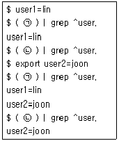
- ㉠ set ㉡ unset
- ㉠ set ㉡ env
- ㉠ env ㉡ set
- ㉠ env ㉡ unset
(정답률: 61%)
10. 다음 중 원격지에서 X 클라이언트를 이용하기 위한 설정을 사용자 기반의 키 인증을 진행할 때 사용하는 명령어와 관련 파일의 조합으로 알맞은 것은?
- 명령어: xhost 관련 파일: .authorized_keys
- 명령어: xhost 관련 파일: .Xauthority
- 명령어: xauth 관련 파일: .authorized_keys
- 명령어: xauth 관련 파일: .Xauthority
(정답률: 50%)
11. 다음과 같은 허가권(Permission)을 갖는 파일들이 위치하는 디렉터리로 가장 알맞은 것은?
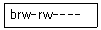
- /boot
- /dev
- /proc
- /var
(정답률: 51%)
12. 다음 설명과 가장 관계가 깊은 것은?
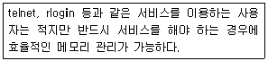
- exec
- fork
- inetd
- standalone
(정답률: 69%)
13. 다음 설명에 해당하는 시그널(Signal)로 알맞은 것은?
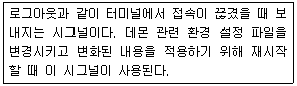
- SIGHUP
- SIGINT
- SIGSTOP
- SIGQUIT
(정답률: 57%)
14. 다음 중 최근 입력한 명령어 5개를 출력하는 명령으로 알맞은 것은?
- !5
- !-5
- history 5
- history -5
(정답률: 67%)
15. 다음 중 X 관련 프로그램의 종류가 나머지 셋과 다른 것은?
- Xfce
- KWin
- Metacity
- Mutter
(정답률: 45%)
16. 다음 중 /etc/sysconfig/network-scripts/ifcfg-eth0 파일에 기록할 수 있는 설정 값으로 틀린 것은?
- DNS1
- NAME
- PEERDNS
- NETWORKING
(정답률: 53%)
17. 다음과 같이 IP를 설정하였을 때 적용되는 특징으로 알맞은 것은?
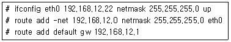
- 재부팅되면 IP정보가 초기화 된다.
- 설정된 서브넷 마스크는 B클래스이다.
- 네트워크 데몬을 재시작 해야 정보가 갱신된다.
- /etc/sysconfig/network-scripts/ifcfg-eth0 파일에 IP정보가 저장된다.
(정답률: 59%)
18. 다음 중 도메인에 관한 설명으로 틀린 것은?
- 도메인은역트리(Tree) 형태의계층적구조로되어있다.
- 도메인 네임은 국제인터넷 주소자원 관리 기관인 W3C에서 관리하고 있다.
- 최상위 도메인은 일반 최상위 도메인과 국가 코드 최상위 도메인으로 구분된다.
- 도메인 네임 시스템이 등장하기 이전에는 /etc/hosts 파일을 사용하여 IP주소를 매핑하였다.
(정답률: 61%)
19. 다음 중 OSI 7 계층에 대한 설명으로 틀린 것은?
- 물리 계층은 상위계층에서 전송된 데이터를 물리적인 전송 매체를 통해 전송단위를 바이트(bytes) 형태로 전송한다.
- 전송 계층은 송신 프로세스와 수신 프로세스 간의 연결(connection) 기능을 제공하고 안전한 데이터 전송을 지원한다.
- 네트워크 계층은 데이터를 패킷(packet) 단위로 분할하여 전송하며 데이터 전송과 경로 선택에 관한 서비스를 제공한다.
- 데이터링크 계층은 상위 계층인 네트워크 계층에서 받은 데이터를 프레임(frame)이라는 논리적인 단위로 구성하고 필요한 정보를 덧붙여 물리 계층으로 전달한다.
(정답률: 68%)
20. 다음 중 ihduser 사용자가 cron 작업을 등록했을 때 생성되는 파일로 알맞은 것은?
- /etc/cron/ihduser
- /etc/cron.d/ihduser
- /var/cron.d/ihduser
- /var/spool/cron/ihduser
(정답률: 49%)
2과목: 리눅스 시스템 관리
21. 다음 명령과 동일한 효과를 얻을 수 있는 작업으로 알맞은 것은?
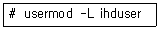
- /etc/passwd의 첫 번째 필드의 맨 앞에 !를 덧붙여서 로그인을 막는다.
- /etc/passwd의 두 번째 필드의 맨 앞에 !를 덧붙여서 로그인을 막는다.
- /etc/shadow의 첫 번째 필드의 맨 앞에 !를 덧붙여서 로그인을 막는다.
- /etc/shadow의 두 번째 필드의 맨 앞에 !를 덧붙여서 로그인을 막는다.
(정답률: 39%)
22. 오류 확인을 위해 해당 패키지 파일이 설치하는 파일 및 디렉터리를 확인하려고 한다. 다음 ( 괄호 ) 안에 들어갈 내용으로 알맞은 것은?
- -qlp
- -qfp
- -qdp
- -qcp
(정답률: 51%)
23. 다음 명령의 결과에 대한 설명으로 가장 알맞은 것은?
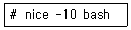
- bash 프로세스의 NI 값을 -10으로 변경한다.
- bash 프로세스의 NI 값을 10으로 변경한다.
- bash 프로세스의 NI 값을 10만큼 감소시킨다.
- bash 프로세스의 NI 값을 10만큼 증가시킨다.
(정답률: 54%)
24. 다음 중 1주일에 3회 실행되는 crontab 설정으로 알맞은 것은?
- 1,3,5 0 * * 0 /etc/work.sh
- 0 1,3,5 * * 0 /etc/work.sh
- 0 * * 1,3,5 0 /etc/work.sh
- 0 0 * * 1,3,5 /etc/work.sh
(정답률: 68%)
25. 다음 명령의 결과에 대한 설명으로 알맞은 것은?
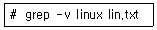
- lin.txt에서 linux라는 문자열이 없는 줄을 출력한다.
- lin.txt에서 linux라는 문자열이 있는 줄의 개수만 출력한다.
- lin.txt에서 linux라는 문자열이 중복되어 있는 줄을 제거하고 출력한다.
- lin.txt에서 linux라는 문자열의 대소문자를 무시하고 문자열이 있으면 무조건 출력한다.
(정답률: 51%)
26. 다음 설명에 해당하는 명령으로 알맞은 것은?
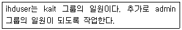
- groupmod -n admin ihduser
- groupmod -g admin ihduser
- usermod -g admin ihduser
- usermod -G admin ihduser
(정답률: 50%)
27. 다음 중 사용자의 패스워드에 적용되는 해시 알고리즘의 이름을 확인할 수 있는 파일로 알맞은 것은?
- /etc/passwd
- /etc/shadow
- /etc/login.defs
- /etc/default/useradd
(정답률: 43%)
28. 다음 파일의 소유자를 ihduser, 소유 그룹권한은 kait로 변경하는 명령으로 알맞은 것은?
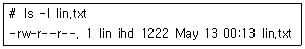
- chown ihduser.kait lin.txt
- chgrp ihduser.kait lin.txt
- gpasswd ihduser.kait lin.txt
- groupmod ihduser.kait lin.txt
(정답률: 67%)
29. 다음 중 30행인 lin.txt 파일에서 11번째 행부터 20번째 행까지만 출력하는 명령으로 알맞은 것은?
- head -n 11 lin.txt | tail
- head -n 20 lin.txt | tail
- tail -n 10 lin.txt | head
- tail -n 11 lin.txt | head
(정답률: 51%)
30. yum을 이용해서 텔넷 서버 패키지를 검색한 후에 설치하는 과정이다. ㉠ 및 ㉡에 들어갈 내용으로 알맞은 것은?
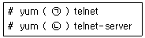
- ㉠ info ㉡ search
- ㉠ search ㉡ info
- ㉠ search ㉡ install
- ㉠ info ㉡ install
(정답률: 77%)
31. 다음 설명에 해당하는 프로그램 설치 과정으로 가장 알맞은 것은?
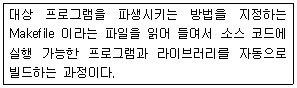
- configure
- make
- make clean
- make install
(정답률: 49%)
32. ihduser 사용자의 모든 프로세스를 강제 종료하는 경우 ( 괄호 ) 안에 들어갈 명령으로 알맞은 것은?
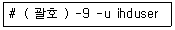
- kill
- pgrep
- pkill
- signal
(정답률: 41%)
33. find 명령이 실행 중인 상태이다. 다음 중 이 명령을 계속 실행하면서 다른 작업을 수행하기 위한 과정으로 알맞은 것은?
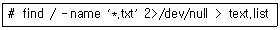
- [ctrl]+[d]를 누른 후에 bg 명령을 실행한다.
- [ctrl]+[d]를 누른 후에 fg 명령을 실행한다.
- [ctrl]+[z]를 누른 후에 bg 명령을 실행한다.
- [ctrl]+[z]를 누른 후에 fg 명령을 실행한다.
(정답률: 64%)
34. 다음 중 데비안 패키지 관리 기법으로 거리가 먼 것은?
- dselect
- zypper
- synaptic
- aptitude
(정답률: 58%)
35. 다음 중 압축의 효율성이 좋은 프로그램부터 알맞게 나열된 것은?
- gzip > bzip2 > xz
- bzip2 > gzip > xz
- xz > gzip > bzip2
- xz > bzip2 > gzip
(정답률: 56%)
36. 다음 중 사용자 쿼터를 이용하기 위해 /etc/fstab 파일에 등록하는 설정 값으로 알맞은 것은?
- quota.user
- aquota.user
- usrquota
- userquota
(정답률: 52%)
37. 다음 중 분할된 디스크의 파티션 별로 사용량을 확인하는 명령은?
- du
- df
- free
- blkid
(정답률: 63%)
38. 다음 그림에 해당하는 명령으로 알맞은 것은?
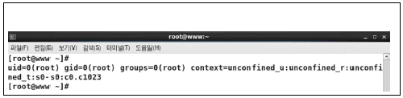
- w
- id
- who
- lslogins
(정답률: 63%)
39. 다음과 같은 형식이 기재된 파일로 알맞은 것은?
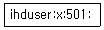
- /etc/passwd
- /etc/shadow
- /etc/group
- /etc/gshadow
(정답률: 45%)
40. ihduser 사용자가 다음 로그인 시에 패스워드를 반드시 바꾸도록 설정하려고 한다. 다음 ( 괄호 )안에 들어갈 내용을 알맞은 것은?
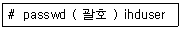
- -e
- -n
- -w
- -x
(정답률: 48%)
41. 커널 컴파일 단계에서 기존에 수행한 작업이 있는 경우, 관련 파일을 제거하는 과정을 수행할 수 있다. 다음 ( 괄호 ) 안에 들어갈 수 있는 내용을 가장 강력한 명령의 순서부터 알맞게 나열한 것은?
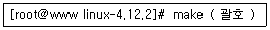
- clean > mrproper > distclean
- mrproper > clean > distclean
- mrproper > distclean > clean
- distclean > mrproper > clean
(정답률: 50%)
42. 다음 중 지정한 모듈과 의존성이 있는 모듈을 제거하기 위해 ( 괄호) 안에 들어갈내용으로알맞은 것은?
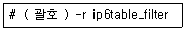
- insmod
- rmmod
- depmod
- modprobe
(정답률: 46%)
43. 다음 중 사용 가능한 모듈 목록을 출력할 때 사용하는 명령으로 알맞은 것은?
- lsmod
- depmod
- modinfo
- modprobe
(정답률: 26%)
44. 다음 중 ㉠ 및 ㉡에 들어갈 내용으로 알맞은 것은?
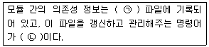
- ㉠ modprobe.conf ㉡ modprobe
- ㉠ modprobe.conf ㉡ depmod
- ㉠ modules.dep ㉡ modprobe
- ㉠ modules.dep ㉡ depmod
(정답률: 51%)
45. 다음 중 프린터 관련 프로토콜인 IPP(Internet Printing Protocol)가 사용하는 포트번호로 알맞은 것은?
- 92
- 631
- 3096
- 3396
(정답률: 62%)
46. 다음 중 CentOS 6 버전에서 X 윈도 기반의 프린터 설정 도구를 실행하는 명령으로 알맞은 것은?
- printconf
- printtool
- redhat-config-printer
- system-config-printer
(정답률: 53%)
47. 다음 중 파일의 내용을 출력할 때 사용하는 명령어의 조합으로 알맞은 것은?
- lp, lpr
- lp, lpq
- lpr, lpq
- lpr, lpstat
(정답률: 61%)
48. 다음 중 리눅스에서 사용하는 프린팅 시스템의 조합으로 알맞은 것은?
- CUPS, ALSA
- CUPS, LPRng
- LPRng, ALSA
- LPRng, SANE
(정답률: 63%)
49. 다음 중 X 윈도 환경에서만 사용가능한 커널 컴파일 도구로 알맞은 것은?
- make config
- make nconfig
- make gconfig
- make menuconfig
(정답률: 40%)
50. 다음 중 사운드카드를 제어하는 명령으로 알맞은 것은?
- oss
- xsane
- alsactl
- cdparanoia
(정답률: 59%)
51. 다음 중 시스템 백업에 대한 설명으로 틀린 것은?
- tar, cpio와 같은 유틸리티는 증분백업이 가능하다.
- 리눅스에서는 tar, dd, dump, cpio, rsync와 같은 유틸리티로 백업이 가능하다.
- 백업의 종류에는 전체 백업(Full Backup)과 부분 백업(Partial Backup)으로 구분된다.
- 부분 백업은 증분백업(Incremental Backup)과 차등 백업(Differential Backup)으로 구분된다.
(정답률: 61%)
52. tar 명령을 이용해 2019년 1월 1일 이후로 변경된 파일을 백업하려고 한다. 다음 중 ( 괄호 ) 안에 들어갈 내용으로 알맞은 것은?
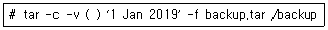
- -D
- -H
- -I
- -N
(정답률: 37%)
53. 다음 중 로그 관련 파일의 설명으로 알맞은 것은?
- /var/log/xferlog : FTP 접속과 관련된 작업이 기록된 파일
- /var/log/lastlog : 시스템이 부팅할 때 출력되었던 로그들이 기록된 파일
- /var/log/wtmp : 콘솔, telnet, ftp 등으로 접속이 실패한 경우가 기록된 파일
- /var/log/btmp : 콘솔, telnet, ftp 등으로 접속한 사용자 기록, 시스템을 재부팅한 기록 등의 로그가 쌓이는 파일
(정답률: 53%)
54. 서버의 커널 변수를 제어하여 TCP 연결 상태를 3시간동안 유지하도록 변경하려고 한다. 다음중 커널 변수 값을 설정하기 위한 명령으로 알맞은 것은?
- sysctl -w net.ipv4.tcp_fin_timeout=3
- sysctl -w net.ipv4.tcp_keepalive_time=3
- echo 10800 > /proc/sys/net/ipv4/tcp_fin_timeout
- echo 10800 > /proc/sys/net/ipv4/tcp_keepalive_time
(정답률: 48%)
55. 2일 전 로테이션이 실행되지 않는 시스템에 ihd사용자가 시스템에 로그인하여 시스템 일부를 수정하였다. 다음 중 ihd사용자가 로그인에 성공한 기록을 확인하기 위한 명령으로 틀린 것은?
- last
- last ihd
- lastb ihd
- lastlog -t 5
(정답률: 48%)
56. 다음 중 logrotate로 구현할 수 있는 작업으로 틀린 것은?
- 30분마다 한 번씩 로그 로테이트를 수행한다.
- 로그 크기가 250MB가 되면 로그 로테이트를 수행한다.
- 로그 로테이트로 생성되는 백로그 파일을 3개로 제한한다.
- 로그 로테이트가 된 후 “/usr/bin/killall‐HUP httpd” 명령을 실행한다.
(정답률: 44%)
57. /var/log/messages 파일은 시스템에서 발생되는 표준 메시지가 쌓이는 파일로, 날짜 및 시간, 메시지가 발생한 호스트명, 메시지를 발생한 내부 시스템이나 응용 프로그램의 이름, 발생된 메시지 순으로 기록된다. 다음 중 내부 시스템이나 응용 프로그램의 이름과 발생된 메시지를 구분하는 기호로 알맞은 것은?
- 콜론(:)
- 콤마(,)
- 파이프(|)
- 세미콜론(;)
(정답률: 50%)
58. chattr명령을 이용하여 파일 속성을 변경하려고 한다. 다음 중 속성 변경에 사용되는 기호로 틀린것은?
- +
- -
- *
- =
(정답률: 54%)
59. 다음 중 보안 도구 중 하나인 tripwire에 대한 설명으로 알맞은 것은?
- tripwire의 모태는 유닉스 계열 패스워드 크랙 도구(Password Crack tool)이다.
- 명령 행에서 사용하는 네트워크 트래픽 모니터링 도구로서 외부 호스트로부터 들어오는 패킷들을 검사할 수 있다.
- 1992년 퍼듀(Purdue)대학의 컴퓨터 보안 전문가인 Eugene Spafford박사와 대학원생인 Gene Kim에 의해 개발되었다.
- 네트워크 탐지 도구 및 보안 스캐너로 시스템에서 서비스 중인 포트를 스캔하여 관련 정보를 출력하는 기능을 제공한다.
(정답률: 48%)
60. 다음에서 설명하는 백업 유틸리티로 알맞은 것은?
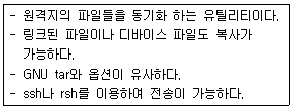
- rcp
- cpio
- rsync
- restore
(정답률: 62%)
3과목: 네트워크 및 서비스의 활용
61. 웹 브라우저를 사용해서 웹 서버에 접속했더니 그림과 같이 표시되었다. 다음 중 해당 내용과 관련된 httpd.conf의 Options 항목으로 알맞은 것은?
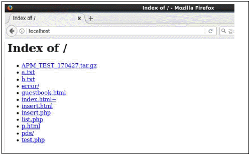
- Include
- Indexes
- DirectoryIndex
- FollowSymLinks
(정답률: 48%)
62. 다음 중 VM1이라는 가상 머신을 종료시키는 명령으로 알맞은 것은?
- virsh off VM1
- virsh halt VM1
- virsh stop VM1
- virsh shutdown VM1
(정답률: 59%)
63. 다음 중 레드햇(Red Hat)사에서 개발한 LDAP서버 프로그램으로 알맞은 것은?
- 389 Directory Server
- Active Directory Server
- Tivoli Server
- OpenLDAP
(정답률: 35%)
64. 다음 조건일 때 NFS 클라이언트에서 설정하는 내용으로 알맞은 것은?
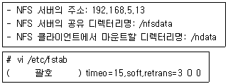
- /ndata 192.168.5.13:/nfsdata nfs
- /ndata nfs 192.168.5.13:/nfsdata
- 192.168.5.13:/nfsdata /ndata nfs
- 192.168.5.13:/nfsdata nfs /ndata
(정답률: 48%)
65. 다음 ㉠ 및 ㉡에 들어갈 HTTP 요청 메소드로 알맞은 것은?
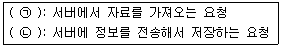
- ㉠ POST ㉡ GET
- ㉠ GET ㉡ POST
- ㉠ PUT ㉡ GET
- ㉠ PUT ㉡ POST
(정답률: 70%)
66. 다음 그림과 같이 php 연동 여부를 확인하려고 할 때 ( 괄호 ) 안에 들어갈 내용으로 알맞은 것은?
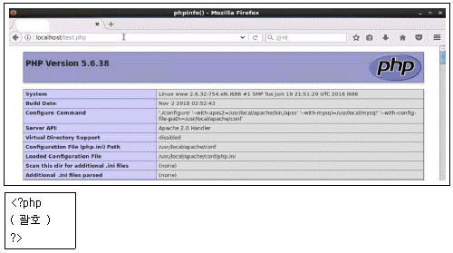
- testphp();
- testinfo();
- phpinfo();
- infophp();
(정답률: 62%)
67. 다음 중 NIS 서버에서 맵 파일들이 생성되는 디렉터리로 알맞은 것은?
- /var/yp
- /var/ypbind
- /var/ypserv
- /var/ypconv
(정답률: 37%)
68. 삼바 서버의 설정이 다음과 같은 경우에 윈도우에서 접근할 때 나타나는 폴더명으로 알맞은 것은?
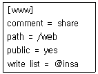
- www
- share
- web
- insa
(정답률: 56%)
69. 다음 중 NFS 서버를 설정할 때 사용하는 root_squash 옵션에 대한 설명으로 알맞은 것은?
- root 사용자만 nfsnobody 권한으로 매핑시키고, 일반 사용자 권한은 그대로 인정된다.
- root 사용자는 권한이 인정되고, 일반 사용자를 nfsnobody 권한으로 매핑시킨다.
- root 사용자와 일반 사용자 모두 nfsnobody 권한으로 매핑시킨다.
- root 사용자와 일반 사용자 모두 권한이 그대로 인정된다.
(정답률: 54%)
70. 다음 중 vsftpd.conf에서 익명의 사용자도 업로드가 가능하도록 지정하는 설정으로 알맞은 것은?
- anon_upload_enable=ON
- anon_upload_enable=OFF
- anon_upload_enable=YES
- anon_upload_enable=NO
(정답률: 68%)
71. 다음 ㉠ 및 ㉡에 들어갈 내용이 알맞게 짝지어진 것은?
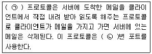
- ㉠ IMAP ㉡ 110
- ㉠ IMAP ㉡ 143
- ㉠ POP3 ㉡ 110
- ㉠ POP3 ㉡ 143
(정답률: 57%)
72. 다음 중 발신 도메인을 ihd.or.kr로 강제 적용할 때 설정하는 sendmail.cf 파일의 내용으로 알맞은 것은?
- Cwihd.or.kr
- Fwihd.or.kr
- Djihd.or.kr
- Oihd.or.kr
(정답률: 58%)
73. 다음 설명에 해당하는 메일 관련 파일로 알맞은 것은?
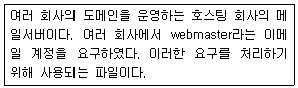
- /etc/aliases
- /etc/mail/access
- /etc/mail/virtusertable
- /etc/mail/local-host-names
(정답률: 43%)
74. 다음은 /etc/named.conf 파일 설정의 일부이다. ( 괄호 ) 안에 들어갈 내용으로 알맞은 것은?
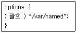
- type
- file
- directory
- recursion
(정답률: 52%)
75. 다음은 zone 파일 설정의 일부이다. 관리자 계정이 ihduser, 도메인이 ihd.or.kr일 경우 ( 괄호 )안에 들어갈 내용으로 알맞은 것은?
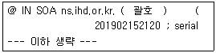
- ihduser.ihd.or.kr
- ihduser.ihd.or.kr.
- ihduser@ihd.or.kr
- ihduser@ihd.or.kr.
(정답률: 54%)
76. 다음 설명에 해당하는 가상화의 종류로 알맞은 것은?
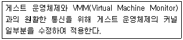
- 전가상화
- 반가상화
- 호스트 기반 가상화
- 운영체제 레벨 가상화
(정답률: 57%)
77. 다음 중 다양한 하이퍼바이저(hypervisor)들을 통합 관리하기 위해 플랫폼에 해당하는 기술로 틀린 것은?
- Openstack
- Cloudstack
- vSphere
- Eucalyptus
(정답률: 47%)
78. 다음 설명에 해당하는 가상화 기술로 알맞은 것은?
- KVM
- XEN
- Docker
- VirtualBox
(정답률: 53%)
79. DNS 서버의 IP 주소가 192.168.12.22이고, 도메인이 ihd.or.kr이다. 다음 중 리버스 존(Reverse Zone) 파일을 지정할 때 ( 괄호 ) 안에 들어갈 내용으로 알맞은 것은?
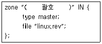
- 192.168.12.in-addr.arpa
- 12.168.192.in-addr.arpa
- ihd.or.kr.in-addr.arpa
- kr.or.ihd.in-addr.arpa
(정답률: 58%)
80. 다음 중 설치한 후에 해당 기술이 포함된 커널로 재부팅해야만 서비스 운영이 가능한 가상화 기술로 알맞은 것은?
- KVM
- XEN
- Docker
- VirtualBox
(정답률: 36%)
81. 다음 중 xinetd.conf 파일에서 instances 항목에 대한 설명으로 알맞은 것은?
- 사용 가능한 서비스의 목록을 지정한다.
- 동시에 서비스할 수 있는 서버의 최대 개수를 지정한다.
- 동일한 IP 주소로 접속할 수 있는 서비스의 수를 지정한다.
- 초당 요청 수가 일정 개수 이상일 경우에 지정한 시간 동안 접속 연결을 중단한다.
(정답률: 51%)
82. 아파치 2.x 버전 웹 서버의 포트 번호를 8080으로 변경하려고 한다. 다음 중 httpd.conf에 설정하는 항목 값으로 알맞은 것은?
- Port 8080
- Port :8080
- Listen 8080
- Listen :8080
(정답률: 51%)
83. 다음 ( 괄호 ) 안에 들어갈 내용으로 알맞은 것은?
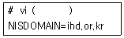
- /etc/yp.conf
- /etc/ypbind.conf
- /etc/ypserv.conf
- /etc/sysconfig/network
(정답률: 43%)
84. 다음 중 NIS 서버의 사용자 계정 정보가 저장되는 맵 파일명으로 알맞은 것은?
- passwd.userid
- passwd.username
- passwd.byid
- passwd.byname
(정답률: 46%)
85. 다음 중 리눅스 시스템에서 윈도우 시스템에 공유된 디렉터리명을 확인할 때 사용하는 명령으로 알맞은 것은?
- smbstatus
- testparm
- smbclient
- nmblookup
(정답률: 43%)
86. 다음 중 PAM 관련 설정 파일에서 사용되는 파일로 기본 설정이 접근 거부될 사용자 목록 파일은?
- /etc/vsftpd/ftpuser
- /etc/vsftpd/ftpusers
- /etc/vsftpd/user_list
- /etc/vsftpd/users_list
(정답률: 54%)
87. 다음 중 MTA(Mail Transfer Agent)에 속하는 프로그램으로 틀린 것은?
- kmail
- qmail
- postfix
- sendmail
(정답률: 54%)
88. 회사에서 두 개의 도메인을 사용하는 관계로 두 개의 도메인 모두 메일을 받을 수 있도록 파일에 등록하는 과정이다. 다음 ( 괄호 ) 안에 들어갈 파일명으로 알맞은 것은?
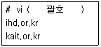
- /etc/aliases
- /etc/mail/access
- /etc/mail/virtusertable
- /etc/mail/local-host-names
(정답률: 33%)
89. 다음 ( 괄호 ) 안에 들어갈 명령으로 알맞은 것은?
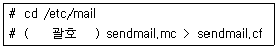
- m4
- makemap hash
- newaliases
- sendmail -bi
(정답률: 60%)
90. 다음은 존 파일(Zone File)의 일부 내용이다. ( 괄호 ) 안에 들어갈 내용으로 알맞은 것은?
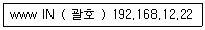
- A
- AAAA
- NS
- CNAME
(정답률: 61%)
91. 다음 설명에 해당하는 DNS 서버의 종류로 가장 알맞은 것은?
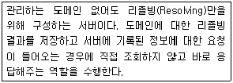
- Caching DNS
- Secondary DNS
- Master DNS
- Slave DNS
(정답률: 63%)
92. 다음은 squid.conf에서 포트 번호를 지정하는 항목이다. ( 괄호 ) 안에 들어갈 내용으로 알맞은 것은?
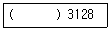
- port
- listen
- http_port
- proxy_port
(정답률: 48%)
93. 다음은 dhcpd.conf에서 게이트웨이 주소를 지정하는 항목이다. ( 괄호 ) 안에 들어갈 내용으로 알맞은 것은?
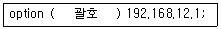
- gateway
- gateway-address
- routers
- routers-address
(정답률: 51%)
94. 다음 중 VNC 서버의 환경 설정 파일에서 해상도를 지정하는 옵션으로 알맞은 것은?
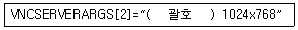
- -set
- -pixel
- -resolution
- -geometry
(정답률: 50%)
95. 다음 ( 괄호 ) 안에 들어갈 내용으로 알맞은 것은?
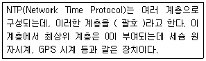
- class
- grade
- layer
- stratum
(정답률: 62%)
96. iptables 명령의 '-j LOG' 옵션을 통해서 특정 호스트에 대한 로그를 기록하도록 정책을 설정 하였다. 다음 중 관련 로그가 기록되는 파일로 알맞은 것은?
- /var/log/btmp
- /var/log/secure
- /var/log/iptables
- /var/log/messages
(정답률: 37%)
97. 다음과 같은 설정을 통해 ssh 침입을 시도하는 특정 호스트를 차단하려고 할 때 적용할 수 있는 파일로 알맞은 것은?
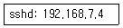
- /etc/hosts.deny
- /etc/ssh/sshd_config
- /etc/syscofing/iptlables
- /etc/syscofing/selinux
(정답률: 55%)
98. 다음 중 INPUT 사슬에 대한 기본 정책을 거부로 설정하는 명령으로 알맞은 것은?
- iptables -F INPUT DROP
- iptables -N INPUT DROP
- iptables -P INPUT DROP
- iptables -X INPUT DROP
(정답률: 39%)
99. 다음 설명에 해당하는 공격 유형으로 알맞은 것은?
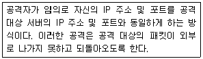
- TCP SYN Flooding
- Teardrop Attack
- Land Attack
- Smurf Attack
(정답률: 51%)
100. 다음 소스 코드와 관련 있는 DoS 공격 유형으로 알맞은 것은?
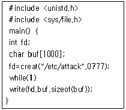
- 디스크 자원 고갈
- 메모리 자원 고갈
- 프로세스 자원 고갈
- 무작위 대입 공격
(정답률: 44%)
SLS는 1992년에 최초로 배포된 리눅스 배포판 중 하나이며, 이후 1993년에 Slackware가 출시되었습니다. 그리고 1994년에는 SUSE가 처음으로 출시되었습니다. 따라서 초기부터 최근까지의 순서는 SLS - Slackware - SUSE가 됩니다.